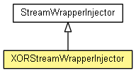

org.eclipse.net4j.signal.wrapping
Class XORStreamWrapperInjector
java.lang.Object
 org.eclipse.net4j.signal.wrapping.StreamWrapperInjector
org.eclipse.net4j.signal.wrapping.XORStreamWrapperInjector
org.eclipse.net4j.signal.wrapping.StreamWrapperInjector
org.eclipse.net4j.signal.wrapping.XORStreamWrapperInjector
- All Implemented Interfaces:
- IElementProcessor
- public class XORStreamWrapperInjector
- extends StreamWrapperInjector

| Methods inherited from class java.lang.Object |
clone, equals, finalize, getClass, hashCode, notify, notifyAll, toString, wait, wait, wait |
XORStreamWrapperInjector
public XORStreamWrapperInjector(String protocolID,
int[] key)
Copyright (c) 2004 - 2012 Eike Stepper (Berlin, Germany) and others.